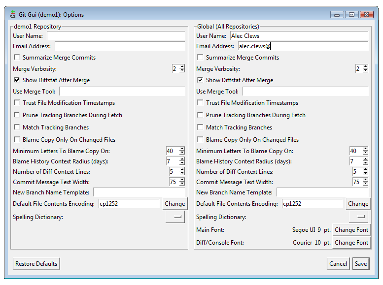
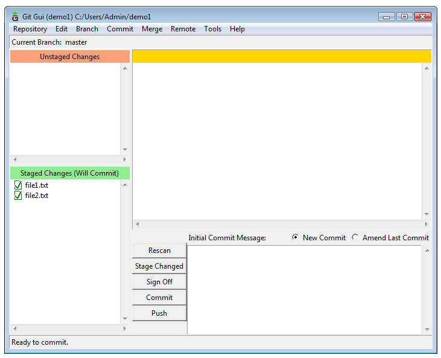
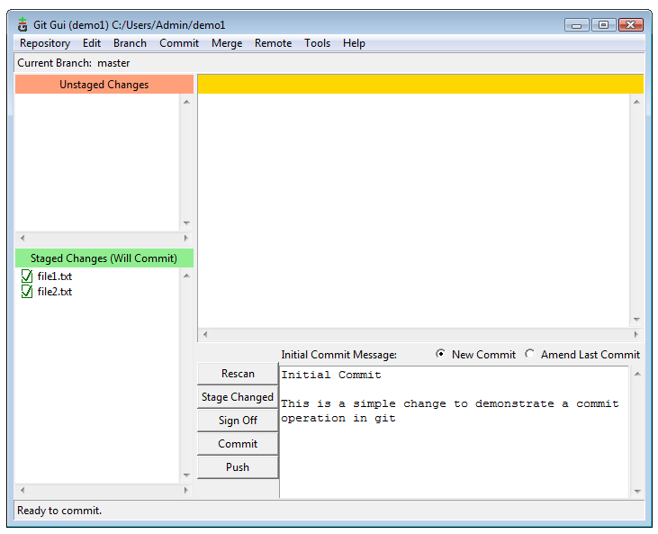
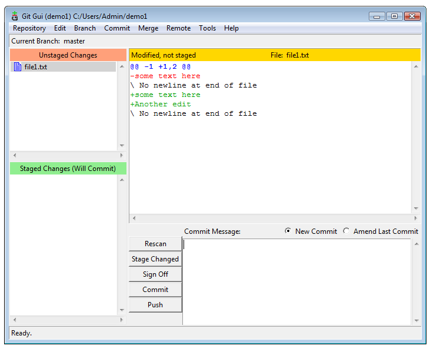
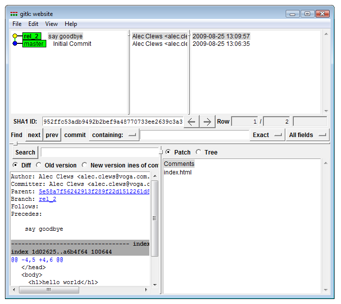
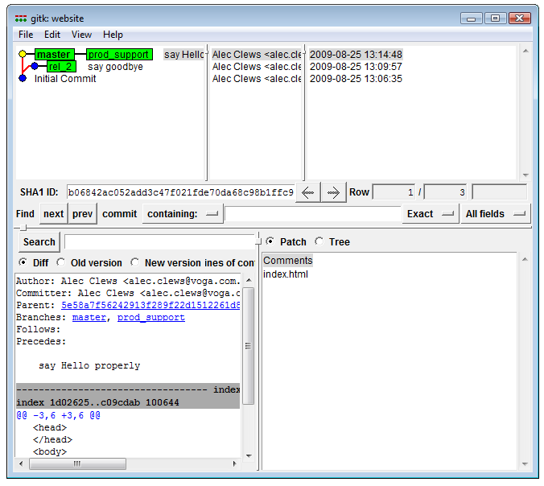

This article introduces version control and Git without assuming you have any prior knowledge or programming experience. Because of its introductory nature, certain details are simplified or omitted and the use of the Git Graphical User Interface (Git GUI) is emphasized. Afterwards the reader should be able to use Git for basic version control and know where to locate further information.
Version control is the process of recording the history of changes to files as they are modified. Users can go back in time and get old versions and identify where changes were introduced (people sometimes refer to version control tools as time machines). This means that it's easier to:
The first version control (VC) tool, SCCS, was written in 1972 and since that time there have been major advances in the way VC tools are used. Git represents the current state of the art in that it is distributed. A distributed VC tool gives each user a complete history of all changes to the files on which they work. So, for instance, it's possible to look at previous versions of files while flying across the Pacific (depending on your laptop battery too, of course). Later, when you touch down, all changes can be merged together over the computer network for release or further work. This may sound complicated, but the tool makes it relatively easy and error free.
Other well-known VC tools -- for example Subversion -- are classed as centralized and provide only a single place, the repository, into which users store their changes on a regular basis. In this model users work without a personal copy of the change history; they only have the set of the files they're currently working with.
Git runs on Windows, Mac OS X, Linux and UNIX. It was developed by Linus Torvalds, the lead developer of Linux, in 2005 to answer the needs of the development community. As well as a powerful tool for the individual developer, it provides a powerful model for cooperation. Community source code sharing sites like GitHub and Gitorious make full use of its capabilities.Git maintains a database of all previous file versions in a repository (repo in geek speak) and it is usually located in a directory called .git. In UNIX-style systems (like Mac OS X and Linux) names that begin with a . are hidden by default so the repo is usually invisible during normal work (except on Windows). As well as the contents of the files and directory versions the repo contains additional housekeeping information about current work, other remote repositories we're sharing with, current settings, and so on. In Git we have a separate repo for each of our projects.
In addition to the repo, each project will have a set of files that we're working on and editing. As we complete changes to our working files we add the changes to the repo; this is called committing changes. In actual fact we're not fully committed to our changes as we can always retrieve old versions and make changes to the changes. We can also access a summary of our work against previous versions to see what we've done so far. The set of files we're currently working on is called the working copy. We can easily change the working copy to a different version whenever we want.
Before progressing any further let's install Git and set up a small test repo to work with.
If you use Linux then installing should be a simple matter of using your package manager to install git (and possibly Git GUI if it is a separate package). For Mac OS X either use the Git OSX Installer or you can use Mac Ports. Windows users who use Cygwin can use the Git from Cygwin; just use the Cygwin package manger to install the appropriate packages. Otherwise Windows users should use the the native Windows Git package: msysgit (you'll want to download the file labelled " Full installer if you want to use official Git.." and avoid the file labelled "Full installer (self-contained) if you want to hack on Git" and accept all the installation defaults).
The quickest way to get started is to use the Git GUI client. If you use Windows you'll find Git GUI on your Start menu, otherwise you can type the command git gui at the command prompt. You'll see a screen similar to this:
 .
.
Select Create New Repository and enter the name of a new directory. Git will create the directory and initialize an empty repo. Alternatively, create a project directory, and then within the new directory enter the following from the command prompt:
$ git initIf you're on Mac OS X or Linux you can just use the standard terminal. If you're on Windows and you've installed the msysGit package, then you'll find the Git Bash item on your Start menu. This will launch a special command prompt for using Git. Exclude the $, that represents the command prompt, but enter in everything after it.
You should then see a message like the following:
Initialized empty Git repository in /path/to/your/directory/.git/If you look in the project directory you should see a directory named .git (on Mac OS X or Linux you will need to use the command ls -A to show the hidden .git directory) In your newly created project directory make some new text files using your favorite editor. You now have some changes that are not under version control, in Git these are called unstaged. In Git GUI they look should like this:

You can retrieve the same information from the command line with the command git status.

Now for a little diversion before we add our files to the repository: the Git index.
Git is a little different to most VC tools in that adding changes to a repo is a two stage process. All changes are staged in the index, before they're committed into the repo.

The index allows us to add, remove and modify changes on the way to building a commit. While the index may seem confusing and unnecessary at first, it is useful for a variety of reasons:
Whenever we have file changes the git add command is used to add the content to the index. As well as
add there is also the git rm command to remove files and the git mv file to move or rename files. Once we've added the appropriate changes to the index we can commit changes to the repo.
Before using Git we need to tell Git who we are; our name and email address. From the Git GUI interface select Edit > Options and fill in the top two fields under Global. Leave all the other values as they are
$ git config --global user.name "Alec Clews"
$ git config --global user.email "alec.clews@voga.com.au"Now we can add our changes to the index and commit them to the repository. First select both files on the Unstaged Changes pane.
Then select Commit > Stage To Commit (ctrl+T). The display then shows that we have no changes waiting to be staged, but we do have changes to be committed.
Alternatively you can run the following command
$ git add file1 file2
You can also use the following if it's unnecessary to specify which files to add:
$ git add .Now that our files are staged, we can commit our first changes to the repo. Each time we make a commit, Git expects an informational message that's added as part of the commit; if fail to provide a message no commit will be made. Generally we add a single line description and then a more detailed message. Click the Commit button and the changes are committed to the repo.
$ git commit -m "A message about your changes"Now that we've made a commit, the latest version in the repo -- called HEAD -- is the same as the contents of the working files. Running the command git status should show the message:
$ git status
# On branch master
nothing to commit (working directory clean)We can always refer to the contents of the last commit as HEAD and the contents of the commit prior to that as HEAD^1 (and HEAD^2 for the commit prior to that, and so on). However that quickly becomes error prone and hard to use, so Git gives each commit a special id which is an apparently random string of 40 characters called the sha1 hash. It looks a like this: a90973cbe16d5a0cf4fcd5cca659f4a4587d7cb5.
While it may look a bit user unfriendly every commit across the world has a unique sha1 hash and when you come to share your history with other Git users (for instance, other members of the web team) it's a unique way to refer to your work and its history. If two users have the same sha1 in their repo then they are referring to the same piece of work. In practice, humans can usually just refer to the last few unique digits in the sha1 to uniquely identify a commit.
As a user you'll generally only see a sha1 hash used to represent a commit; however, "under the covers" the hash is used to identify files and directories (which form trees in Git terminology), and other objects. This has an interesting, and highly desirable, effect. When you rename a file (or move it in the directory tree) its sha1 hash remains unchanged, but the tree that refers to the file and its name changes. This means that Git can track changes and moves far more easily than tools such as Subversion.
Now, lets make another change. Pretend you've done some work and make a change to one of the files. Git GUI will show you the changes:
You can also run the command git diff to show the changes in your terminal window. We can continue to add and commit changes as before.
To view the history of commits to a project you can use the command git log. Git also has a second GUI application called gitk that displays the history of commits in a graphical format. In Git GUI select Repository > Visualize All Branch History.
One of Git's most powerful features is support for easy branching and merging of files. If you look back over the previous examples you'll see references to master. This is the name of the default branch and every time we make changes they'll be added to the history of the master branch. However life rarely proceeds in a straight line -- instead, we're forced to jump around and work on different versions of our project. Git makes this a lot easier than you would think.
Suppose we have a web site that's currently in production. That work will be maintained on the master branch as the current production release: the working web site. We now have to prepare new changes for the next release of the web site and also fix issues that came up in that last production release. (and probably a million other things as well!)
We can represent this in Git by having three branches:
master: what's in production or about to be released to productiondevelopment: our new set of features for the next release; we'll call this one rel_2maintenance: a copy of the master previously released to production that we use to make and test immediate fixes to the live siteLet's set up another example and see it in action. Create a new repository as we did previously, and add a file called index.html with the source as follows:
<!DOCTYPE HTML PUBLIC "-//W3C//DTD HTML 4.01 Transitional//EN">
<html>
<head>
</head>
<body>
<h1>hello world</h1>
</body>
</html>Now add and commit the file with the message Initial Production version. This is our release version of the web site. If you're curious as to how to make a release, see git archive. All is right with the world and we come in the next day and start working on new features. So that we don't disturb the production code we create a new branch. You can do this in Git GUI by selecting Branch > Create... and giving it a name. Doing it from the command line is just as easy:
$ git branch rel_2There are now two branches in our project. Changes on one branch are independent of the history recorded on the other branch. We can list the branches like this:
$ git branch
* master
rel_2
The branch you are working on is called the active branch, and is marked with an asterisk. The git checkout command is used to switch between branches in order to work on them. Enter the following command:
$ git checkout rel_2You can also use Git GUI; select Branch > Checkout and you'll be given a list of branches to select from. For your information both the git status and git branch commands will indicate the currently active branch, as will the Git GUI window.
$ git branch
master
* rel_2
$ git status
# On branch rel_2
# ...
index.html and add the following:
...
<h1>hello World</h1>
<h2>Goodbye World</h2>
...We can see summary of the changes in Git GUI or by using git diff on the command line:
$ git diff
diff --git a/index.html b/index.html
index 1d02625..e7973bc 100644
--- a/index.html
+++ b/index.html
@@ -4,5 +4,6 @@
</head>
<body>
<h1>hello world</h1>
+ <h2>Goodbye World</h2>
</body>
</html>Lines that begin with the plus symbol (+) indicate the additions that have not been staged. git diff has a variety of options that allow you display changes between the working copy, index and various revisions. Type git diff --help at the command prompt for more information. Incidentally, all Git commands support the --help option.
Stage and commit the changes and we're done. If you use the command line you may like to know that you can do all that with only one command:
$ git commit -a -m "say goodbye"...as well as gain feedback about the committed changes:
[rel_2 0015d91] say goodbye
1 files changed, 1 insertions(+), 0 deletions(-)Git is telling us that:
Running the git log command summarizes the previous two commits
$git log
commit 0015d91c6d24f6d43627bf45af82ee2085fbfc5d
Author: Alec Clews
Date: Wed Jul 29 09:38:51 2009 +1000
say goodbye
commit e74e1271907baf14a4cd5c2d7724373face011d6
Author: Alec Clews
Date: Mon Jul 27 22:05:06 2009 +1000
Initial Production version We can aslo see the history with the Git GUI visualization tool
Now lets simulate a fix to the production release code without affecting our work in progress on the rel_2 branch. Remember that the master branch is the current copy of our production code, so let's move our working copy back to production (our recent changes are safe on the rel_2 branch).
$ git checkout master
Switched to branch 'master'If you're using Git GUI, then select Branch > Checkout.... So, we've returned to the master branch, let's create a new branch for production support and switch to it:
$ git branch prod_support
$ git checkout prod_support
Switched to branch 'prod_support'
$ git branch
master
* prod_support
rel_2
So now we have three branches and we're working on the prod_support branch (because that is the last branch we checked out). Edit index.html (capitalize the H in hello) and then commit the changes. Using the visualization tool from Git GUI we can see all the branches.
$ git checkout master$ git merge prod_support -m "Update production with fix from support"If we look at our history visualization again we can see the effect of the merge.
Now that the fix has been released into production, we can return to working on the rel_2 branch:
$ git checkout rel_2This has been but a very brief tour to introduce the power of Git. There are lots of really great resources to start you off (some of which are listed below). So why would you want to take Git to the next level?
All very sound reasons to explore Git further.